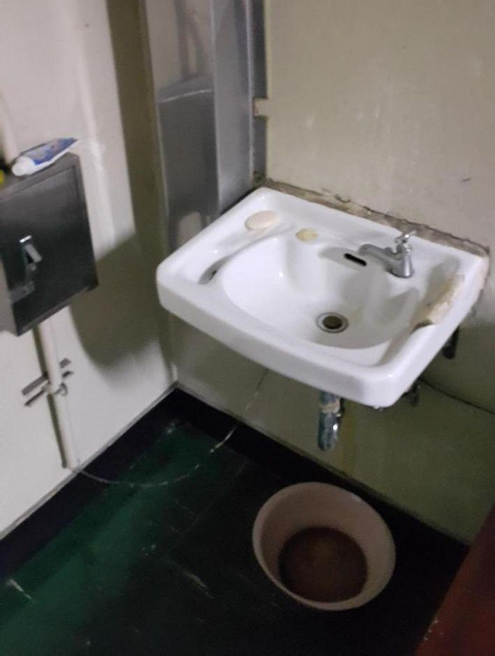
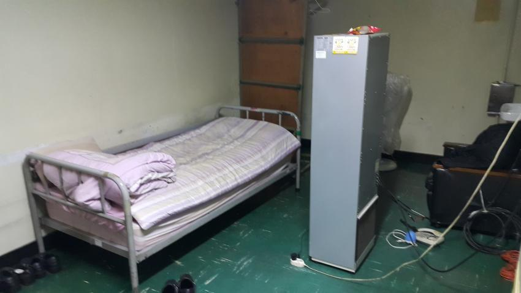

Dear Staff of the International Labour Organization

I am truly astonished and grateful about the last 100 years of hard work done by ILO and the dedication that your staff have not failed to show throughout history.
It is my privilege to have an organization that cares and fights for the rights of workers and to prevent forced labour around the globe.
And here I am, sitting in front of my computer to write this letter to ask for your organization to help out those young men who are moaning for the rescue from the forced labour practices done by South Korea Government. (South Korea had joined the ILO in December 9th, 1991.)
As you already know, South Korea Government had implemented an extremely barbaric practice of forced labour since year of 1995 under the name of “Social Service Agent”(i.e. SSA).
As far as I understand, ILO states on one of its articles, CO29: Convention concerning Forced or Compulsory Labour, No. 29;
Article 1.1: Each Member of the International Labour Organisation which ratifies this Convention undertakes to suppress the use of forced or compulsory labour in all its forms within the shortest possible period.
Article 2.1: For the purposes of this Convention the term forced or compulsory labour shall eman all work or service which is exacted from any person under the menace of any penalty and for which the said person has not offered himself voluntarily.
This article, which was written in 1930, implies that the labour is our right and choice, not a duty. However, South Korea Government forces male citizens those who are either physically or mentally failed to meet the standard to serve in the military to work against their will in administrative, educational, and social welfare field for the mandatory “military” duty.
 Now, as far as I understand, the government absolutely does not have a right to forcefully draft human resources, and place them into non-military-related area such as civil sectors. But somehow South Korea Government is refusing to admit that they are in fact, committing a form of institutional forced labour under the ILO’s standard.
And there is only an extremely vague concept of supervision for the SSA. They are easily ignored, undermined and persecuted while on their duty. Many of SSA people have trouble using annual leave and sick leave even though it is stated and protected by law. A lot of time they face verbal abuse and in extreme cases, physical abuse as well from employes in the institution due to lack of supervision from the upper management.
Also they only get paid about 30% of minimum wage in Korea($414.96 compared to $1465.45. $1 = ₩1188.38). It is basically impossible to maintain minimum living standard with this amount of money without external financial aid.
All of these injustices are simply justified because SSA people are “drafted” from the government. As individuals, they, men of South Korea, do not have enough political power to pressure our government to stop this injustice at this moment. Therefore, they have to endure this modern-time slavery for 1 year and 9 months until they are discharged. And even after they finish the duty, they cannot hold accountable for our government, because as I stated above, the government is refusing to admit that there is a form of institutional forced labour practices in the first place.
Nonetheless, I’m rather hopeful that members of European Union is pressuring South Korea’s government to ratify the CO29. I’ve seen the news on TV and the internet that ILO and EU are working together to persuade South Korea to work with them.
Though my only concern is that South Korea’s government is yet still trying to find another unscrupulous loop hole to escape this situation. For instance, take a look at their statement released in October, saying that; “it is no longer forced labour, because we give them a choice to whether serve in military or serve in civil sector.” It is truly outrageous how a nation’s government is playing with words to avoid consequences for not ratifying the CO29.
Lastly, I know what kind of people run my government and how they would respond to it. I realize how the mixture of their bureaucratic process and rather uncanny sense of authoritarian mindset would lead the government to find every possible excuse to avoid ratifying the ILO’s humanitarian articles. They won’t listen to the people, they do not communicate with legal logic when it comes to their political interests.
My small hope is that the future young men in South Korea would not have to experience such injustice and violence from the government that I have experienced in the last 2 years.
In order to do so, ILO needs to take their toughest approach toward South Korea’s government.
Again, It’s not going to change anytime soon, unless your organization takes a series of actions, including, some might say unconventional approaches. So please do so.
From a citizen of South Korea.